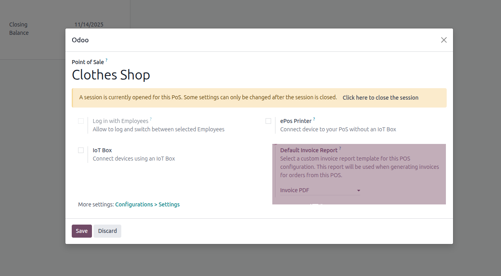

🇬🇧 English
Overview
The POS Custom Invoice Report module extends the functionality of Point of Sale in Odoo
by allowing custom invoice report templates for each POS configuration. This module enables users to define
specific invoice report templates for different POS locations or configurations, providing flexibility in
invoice presentation and branding.
✨ Features
- Custom Report Selection: Configure a specific invoice report template for each POS configuration
- Dynamic Report Assignment: Automatically uses the configured report when generating invoices from POS orders
- Easy Configuration: User-friendly interface integrated into POS settings
- Flexible Filtering: Only invoice-compatible reports are available for selection
- Fallback Support: If no custom report is configured, the system uses the default invoice report
📦 Installation
- Download or clone the module files into your Odoo addons directory
- Update the app list in Odoo (Apps → Update Apps List)
- Search for "POS Custom Invoice Report" in the Apps menu
- Click the Install button
⚙️ Configuration
- Navigate to Point of Sale → Configuration → Point of Sale
- Open or create a POS configuration
- In the Invoice Report section, select your preferred invoice report template
- Save the configuration

Figure 1: POS Configuration with Custom Invoice Report Selection
🚀 Usage
Once configured, the module works automatically:
- Create a POS order and invoice it
- When the invoice is generated or sent, the system will:
- Check if the order is from a POS configuration
- If a custom report template is configured for that POS, use it
- Otherwise, use the default invoice report
🔧 Technical Details
Models Extended:
pos.config: Adds report_template_id fieldaccount.move.send: Overrides _get_default_pdf_report_id method
Dependencies:
🇹🇷 Türkçe
Genel Bakış
POS Custom Invoice Report modülü, Odoo'daki Satış Noktası işlevselliğini her POS
yapılandırması için özel fatura rapor şablonlarına izin vererek genişletir. Bu modül, kullanıcıların
farklı POS konumları veya yapılandırmaları için belirli fatura rapor şablonları tanımlamasına olanak
tanıyarak, fatura sunumu ve markalaşmada esneklik sağlar.
✨ Özellikler
- Özel Rapor Seçimi: Her POS yapılandırması için belirli bir fatura rapor şablonu yapılandırın
- Dinamik Rapor Ataması: POS siparişlerinden fatura oluştururken yapılandırılmış raporu otomatik olarak kullanır
- Kolay Yapılandırma: POS ayarlarına entegre edilmiş kullanıcı dostu arayüz
- Esnek Filtreleme: Yalnızca fatura ile uyumlu raporlar seçilebilir
- Yedek Destek: Özel rapor yapılandırılmamışsa, sistem varsayılan fatura raporunu kullanır
📦 Kurulum
- Modül dosyalarını Odoo eklenti dizininize indirin veya klonlayın
- Odoo'da uygulama listesini güncelleyin (Uygulamalar → Uygulama Listesini Güncelle)
- Uygulamalar menüsünde "POS Custom Invoice Report" arayın
- Kurulum butonuna tıklayın
⚙️ Yapılandırma
- Satış Noktası → Yapılandırma → Satış Noktası menüsüne gidin
- Bir POS yapılandırması açın veya oluşturun
- Fatura Raporu bölümünde tercih ettiğiniz fatura rapor şablonunu seçin
- Yapılandırmayı kaydedin
Şekil 1: Özel Fatura Raporu Seçimi ile POS Yapılandırması
🚀 Kullanım
Yapılandırıldıktan sonra, modül otomatik olarak çalışır:
- Bir POS siparişi oluşturun ve faturalandırın
- Fatura oluşturulduğunda veya gönderildiğinde, sistem:
- Siparişin bir POS yapılandırmasından olup olmadığını kontrol eder
- O POS için özel bir rapor şablonu yapılandırılmışsa, onu kullanır
- Aksi takdirde, varsayılan fatura raporunu kullanır
🔧 Teknik Detaylar
Genişletilen Modeller:
pos.config: report_template_id alanı ekleraccount.move.send: _get_default_pdf_report_id metodunu geçersiz kılar
Bağımlılıklar: